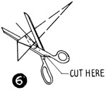

1952—How to Make Hats
by Ruby Carnahan
How to Cut Patterns
SAILOR BRIM PATTERN
Take a square of paper the diameter of the hat from back to front. (Illus. 1) Fold paper in half and fold again in quarters, (Illus. 2) forming a square one fourth size of original square. Fold square of paper diagonally (Illus. 3) fold after fold, (Illus. 4) until the shortest length appears on top (Illus. 5). Cut off ends as marked (Illus. 6), then open paper and it will be a circle of paper (Illus. 7); use this circle for the brim pattern.
SAILOR WITH AN EVEN BRIM
Trace your exact headsize pattern on page 14 and cut out of paste board. Place this headsize pattern in center of brim pattern and draw a line around headsize on brim pattern, cut out headsize on this line. Measure width of brim desired, from head-size to brim edge and draw a line around brim. Cut off excess on this line. Mark back and front on pattern.
SHORT BACKED SAILOR
Start with a circle paper pattern, mark exact width brim is to be in back from edge of brim to headsize. Place your correct headsize pattern on this line, extending headsize pattern toward the front
(Illus. 9) Measure each side of brim from edge of headsize pattern to edge of brim. Be sure the headsize pattern is in the center of the brim pattern. Mark around headsize pattern on brim pattern and cut out headsize on this line. Mark back and front of brim on pattern.
SAILOR CROWN
Use your correct headsize pattern for top of crown pattern. The side crown is a bias piece the length of headsize measurement, with a 2" allowance for lapping ends. Width of bias side crown piece is determined by height crown is to be.
NON-HEADSIZE SAILOR
Start with sailor brim pattern and use your correct headsize Utility Block No. 796 to mark headsize on pattern. Place bottom of block in center of pattern for an even brim or back for a short back and draw a line around bottom of block on pattern, just as you did when using headsize pattern. The bottom of Utility Block is 1" smaller than your headsize and is oval in shape. Size of headsize can be reduced from there if desired.